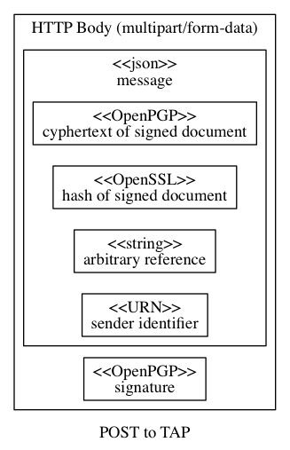
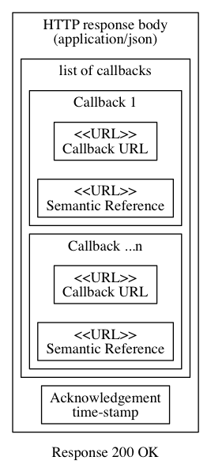

- Spec ID:
ausdigital-tap/2

- Editor:
- Contributors:
- Introduction
- Goals
- Status
- Glossary:
- Licence
- Change Process
- Language
- Introduction
- Dependencies
- TAP Protocol Overview
- TAP Protocol Details
- Sending a business message
- Sign the Business Document
- Create hash of signed business document
- Create cyphertext of signed business document
- Note about published keys
- Compose Message
- Generate signature
- Posting the message to the recipient TAP
- Receipt and Technical Acknowledgement
- Related Material
Introduction
This document describes a protocol for exchanging formal documents (such as invoices) between businesses. TAP is a secure, decentralised, peer to peer architecture where gateways are optional and minimally trusted.
Goals
The primary goal of the Transaction Access Point (TAP) 2.0 Specification is to TBA.
The Transaction Access Point (TAP) 2.0 Specification defines TBA.
Status
This spec is an early draft for consuiltation.
This specification aims to support the Australian Digital Business Council eInvoicing initiative, and is under active development at https://github.com/ausdigital/ausdigital-tap.
Comments and feedback are encouraged and welcome. Pull requests with improvements are welcome too.
Glossary:
| phrase | Definition |
|---|---|
| ausdigital-tap/2 | Version 2 of the AusDigtial TAP specification |
| ausdigital-tapgw/1 | Version 1 of the AusDigtial TAP-GW specification |
| ausdigital-bill/1 | Version 1 of the AusDigtial BILL specification |
| ausdigital-dcl/1 | Version 1 of the AusDigtial DCL specification |
| ausdigital-dcp/1 | Version 1 of the AusDigtial DCP specification |
| ausdigital-nry/1 | Version 1 of the AusDigtial NRY specification |
| ausdigital-idp/1 | Version 1 of the AusDigtial IDP specification |
Licence
Copyright (c) 2016 the Editor and Contributors. All rights reserved.
This Specification is free software; you can redistribute it and/or modify it under the terms of the GNU General Public License as published by the Free Software Foundation; either version 3 of the License, or (at your option) any later version.
This Specification is distributed in the hope that it will be useful, but WITHOUT ANY WARRANTY; without even the implied warranty of MERCHANTABILITY or FITNESS FOR A PARTICULAR PURPOSE. See the GNU General Public License for more details.
You should have received a copy of the GNU General Public License along with this program; if not, see http://www.gnu.org/licenses.
Change Process
This document is governed by the 2/COSS (COSS).
Language
The key words “MUST”, “MUST NOT”, “REQUIRED”, “SHALL”, “SHALL NOT”, “SHOULD”, “SHOULD NOT”, “RECOMMENDED”, “MAY”, and “OPTIONAL” in this document are to be interpreted as described in RFC 2119.
Introduction
The Transaction Access Point (TAP) is a persistently connected “peer” capable of sending and receiving business documents, such as invoices. It interacts with other TAPs following the protocol specified in this document. The TAP is an autonomous agent in business-to-business document exchange.
A TAP might be provided by a commercial ledger service, or maintained as part of an independent business system.
The TAP specification has two parts. The main part (ausdigital-tap/2) defines the protocol all peers must follow (and interfaces they must provide) to send and receive business documents. The second part is an optional gateway specification (ausdigital-tapgw/1), which defines a client-server protocol for trusted business system components (e.g. ledger services) to interact with independent TAP service providers in a generic way.
Dependencies
The messages sent between TAPs carry semantic payloads. Currently, these include ausdigital-bill/1. That specification is maintained independently in the https://github.com/ausdigital/ausdigital-bill repository. Future semantic payloads may be supported without change to the protocol.
All TAPs depend on the following Services:
- ausdigital-dcl/1
- ausdigital-dcp/1
- ausdigital-nry/1
TAPGW providers also depend on the ausdigital-idp/1. TAPs do not need to authenticate when they interact with each other, due to use of well known cryprograpic keys and service endpoint addresses.
TAP Protocol Overview
In this protocol, a Transaction Access Point (TAP) is a business system component that sends and receives business messages. The TAP Protocol describes how one TAP sends the message, and how the other TAP responds when a message is received.
The message is sent to the receiving TAP using HTTP POST operation, with a Content-Type: multipart/form-data body. This body contains two parts, message and signature.
The message part is a mixture of cleartext metadata (used by TAPs) and enciphered payload (used by trusted business system components). The cleartext metadata does not contain sensitive business information, whereas access to the business-sensitive information within the payload is not necessary for participating in the TAP protocol.
The signature part is created by a business system component trusted by the sender (with access to the sender’s private key material). The signature can be used as a unique identifier of the message contents (e.g. transmitted document id).

Receiving TAPs may also use the signature as a filter (messages with invalid signatures MAY be dropped by receiving TAPs, rather than delivered). This allows TAPs to buffer trusted components from anonymous denial of service attacks.
When a valid message is received, the TAP issues an HTTP 200 status and returns a response body with Content-Type: text/json, containing a HATEOS-style list of callback URLs.

See the TAP Protocol Details chapter for more information.
TAP Protocol Details
The TAP Protocol is a very simple REST API. One business sends a message directly to another business’ TAP endpoint (discovered via the SMP):
- The sender uses the HTTP POST verb (over HTTPS) to send the signed message to a TAP.
- The TAP replies with a HATEOS-style list of callback URLs.
- The TAP notarises some non-sensitive but useful data to the blockchain.
Sending a business message
Pre-requisites:
- Sender knows their own business identity, and has access to their own private key.
- Sender knows the recipient business identity (e.g. ABN).
- Sender knows recipient Digital Capability Publisher (DCP) address, which can be discovered from business identity using ausdigital-dcl/1.
- Sender knows appropriate TAP endpoint address for the intended message type (discovered via DCP lookup).
- Sender knows appropriate recipient public key (discovered via DCP lookup).
- The sender has a valid cleartext (not encrypted) business document to send (e.g. an invoice), encoding the appropriate business semantics (e.g. UBL2.0) in an appropriate format (e.g. json).
The process is:
- Sign the business message
- Create hash of signed business document
- Create cyphertext of the signed business document
- Create message
- Generate message signature
- POST message and signature to the recipient TAP
Sign the Business Document
The TAP protocol MAY be used to transport any business message in any format. It MAY be used to transport messages compliant with Billing Semantics. Messages SHOULD be formatted as XML or JSON and UTF-8 encoded.
Message signing is interpreted in the sense used by the OpenPGP standard (RFC4880), however strict compliance would involve 3DES algorithm which is not supported. Approved signing algorithms are those determined --safe by the modern (Eliptic Curve Cryptography compatible) distribution of GnuPG. This is version 2.1.15 at the time of writing, but any stable release at or above v2.1.15 is appropriate.
The following public key formats are supported:
- ECC (RFC6637)
- RSA (RFC4880)
Business documents compression is discouraged, because it is redundant due to compression at the HTTP layer (per RFC2616 and RFC1952). Business documents MAY be compressed with ZIP (RFC1951), ZLIB (RFC1950), or BZip2 algorithms.
The business document and signature are combined into a single ASCII-Armoured file per RFC4880 (i.e. including use of Radix-64 to convert UTF-8 to 7 bit ASCII in the signed file). For example, assuming the current working directory contains a business document doc.json, a signed document signed_doc.txt can be created using the GnuPG command line program like this:
gpg2 \
--output "signed_doc.txt" \
--clearsign "doc.json"
Create hash of signed business document
The following hash algorithms are approved for use:
- SHA256
- SHA384
- SHA512
- BLAKE2b
- BLAKE2s
It is not necessary to sign the hash, because the entire message is signed.
This hash is of the cleartext “signed business document”. When the recipient decrypts the business document, they are able to verify the hash. If the recipient-generated hash does not match the hash in the message, the recipient MUST NOT provide business acceptance of the document.
If a 3rd party is presented with a copy of the message (including this hash), and with a copy of the signed business document, they are able to verify that the hash of the signed business document matches the hash in the message. That way, if the recipient provides business acceptance of the document, the third party knows the document that was accepted matches the cleartext document they were shown (despite the fact the 3rd party does not have access to recipient key material).
Assuming the current working directory contains a signed document signed_doc.txt, a hash of the signed document signed_doc.hash can be created with openssl like this:
openssl dgst -sha256 -out "signed_doc.hash" "signed_doc.txt"
Create cyphertext of signed business document
The message does not contain plaintext of the business message (signed or otherwise). It contains the hash of the signed plaintext (as per above), and cyphertext of the plaintext message.
The cyphertext is created using public key cryptography, using the appropriate public key for the recipient business endpoint, and the appropriate private key of the sender. The public parts of these keypairs are discoverable using the appropriate DCP for each business identifier URNs, which is discoverable using the global DCL. Public keys MUST be published in ASCII-Armoured form in the DCP.
Use of mature and extensively scrutinised cryptography implementations is strongly encouraged. The following examples use GnuPG, although any compliant RFC4880 implementation could be used in an equivalent way.
Assuming the recipient’s public key is not already in the sender’s GnuPG keyring, but is in the current working directory as recipient.gpg, it can be added to the sender’s GnuPG keyring like this:
gpg2 --import "recipient.gpg"
With GnuPG, this is only necessary once. Subsequent messages to the same recipient can skip the key importing step.
Note about published keys
Once the recipient’s key has been added to the sender’s keyring, and assuming the current working directory contains a signed document signed_doc.txt, and the user namespace identifier of the recipient public key is 91f68ffafa1288ad55cb3e61e937870fb5598cc098e125fe29412ab3047f15e1@smp.testpoint.io then cyphertext of signed business document can be created with:
gpg2 --armour \
--output "cyphertext.gpg"
--encrypt \
--recipient 91f68ffafa1288ad55cb3e61e937870fb5598cc098e125fe29412ab3047f15e1@smp.testpoint.io \
signed_doc.txt
This will create a file cyphertext.gpg in the current working directory, which has ASCII-Armour encoding (suitable for inclusion in a json document).
Compose Message
The message part is a mixture of cleartext metadata (used by TAPs) and enciphered payload (used by trusted business system components). The cleartext metadata does not contain sensitive business information, whereas access to the business-sensitive information within the payload is not necessary for participating in the TAP protocol.
The message part does not need to be in any kind of canonical form. It MUST be a valid json document.
Assuming the current working directory contains:
cyphertext.gpg, containing encrypted signed business document in ASCII-Armour formatsigned_doc.hash, containing digest of the signed business documentreference.txt, containing arbitrary string related to the documentsender.txt, containing the URN of the business identifier of the sender
Then the following python script will create message.json file containing the cyphertext and associated metadata in json format.
import json
def read_cyphertext(filename="cyphertext.gpg"):
return open(filename, 'r').read().strip()
def read_hash(filename="signed_doc.hash"):
return open(filename, 'r').read().strip()
def read_reference(filename="reference.txt"):
return open(filename, 'r').read().strip()
def read_sender(filename="sender.txt"):
return open(filename, 'r').read().strip()
def compose_message(filename="message.json", indent=4):
message = {
'cyphertext': read_cyphertext(),
'hash': read_hash(),
'reference': read_reference(),
'sender': read_sender(),
}
result_file = open(filename, 'w')
result_file.truncate()
result_file.write(
json.dumps(message, indent=indent)
)
result_file.write('\n')
if __name__ == "__main__":
compose_message()
Generate signature
The signature part is created by a business system component trusted by the sender (with access to the sender’s private key material). The signature can also be used to uniquely identify the message contents.
Assuming the current working directory contains the message (as message.json), the following command will create a signature message.sig:
gpg2 --output message.sig --sign message.json
Posting the message to the recipient TAP
Layered on top of HTTP Protocol:
- MUST use HTTPS (RFC2818).
- MUST use
Content-Type: multipart/form-data(RFC2388) - MUST NOT use
Content-Type: application/x-www-form-urlencode(RFC1876 is NOT supported) - MAY explicitly declare
Content-Transfer-Encoding: base64 - MUST NOT rely on additional TAP-related information in HTTP headers, such as message or conversation identifiers.
The message is sent to the receiving TAP using HTTP POST operation. The posted body contains two parts, named message and signature.
Assuming the current working directory contains the message (as message.json) and signature (as message.sig), the following curl command will post the message to the recipient TAP (replace <TAP_URL> with HTTPS URL discovered from the Service Metadata Publisher).
curl -X POST \
-H "Content-Type: multipart/form-data" \
-F "message=@message.json" \
-F "signature=@message.sig" \
<TAP_URL>
Receipt and Technical Acknowledgement
When a valid message is received, the TAP issues an HTTP 200 status and returns a response body with Content-Type: text/json, containing a HATEOS-style list of callback URLs.
TODO:
- example response.
- explain callback URLs
- explain callback semantic URLs
- define error responses.
Related Material
- AusDigital Transaction Access Point Implementation Guide (v1.0, available here), which provides background to the AusDigital community process.
- GitHub issues for collaborating on the development of the TAP.
- A reference TAP service (for testing and development purposes).
- Free, Open-Source Software TAP implementation.
- An automated TAP test suite.